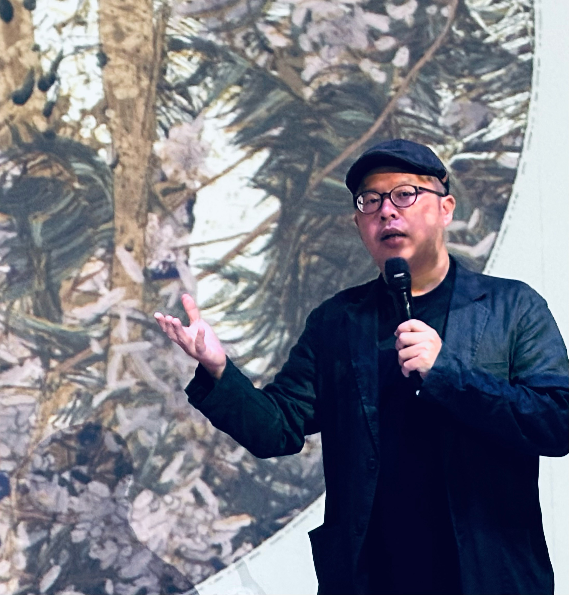
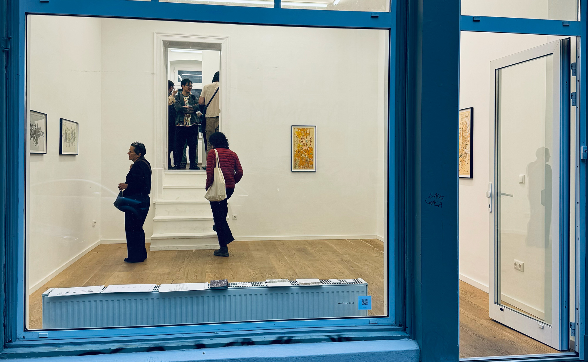
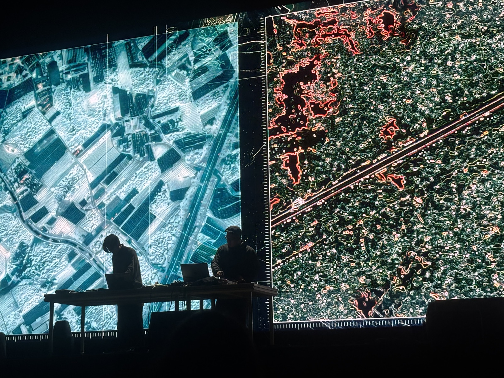
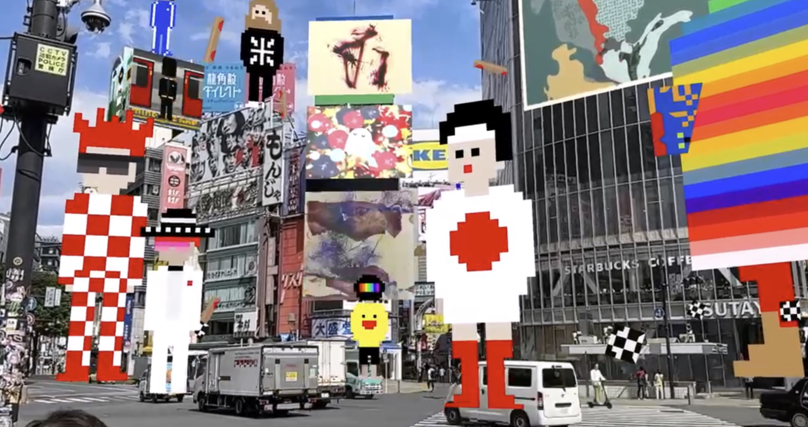
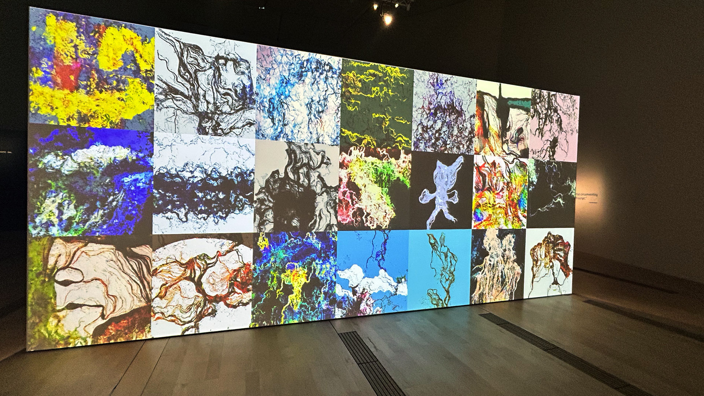
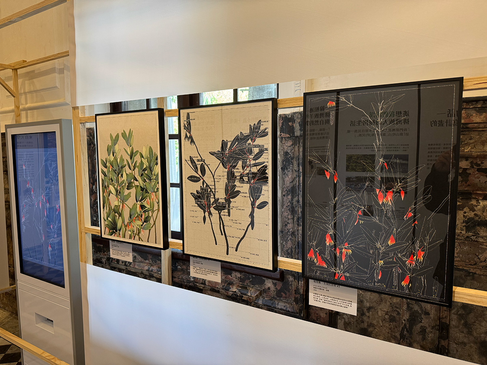
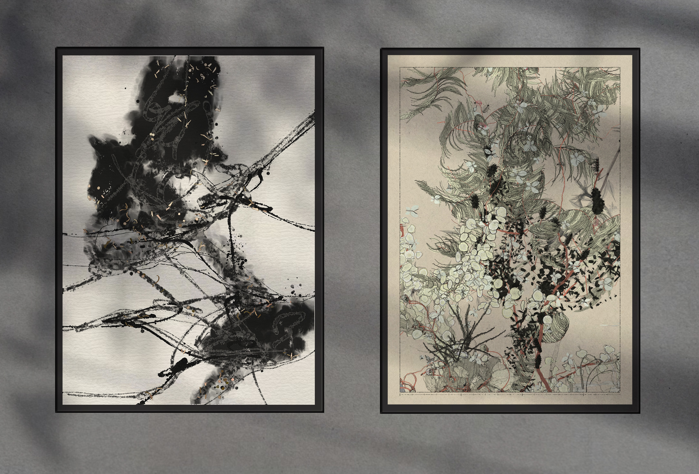

王新仁（1982年出生於臺灣臺中），為臺灣當代數位藝術與生成藝術領域的先鋒。身為一位創意編碼者（Creative Coder）與新媒體藝術家，他擁有超過15年的創作資歷，擅長將演算法系統、聲音與東方繪畫哲學相結合。他擁有國立臺北藝術大學（TNUA）新媒體藝術學系碩士學位，目前擔任 akaSwap 的藝術總監。
王新仁將程式碼作為主要創作媒介，透過精密數學公式鏈結聲音與影像，建構出動態的藝術系統。他的創作致力於探索混沌、不可預測性以及自然現象背後的無形結構。他是臺灣首位登上全球知名生成藝術最高殿堂 Art Blocks 的藝術家（2021年），也是首位在 verse.works 發行長篇生成藝術（long-form）作品的亞洲藝術家，成功將臺灣豐沛的數位藝術創作能量帶入國際視野。





